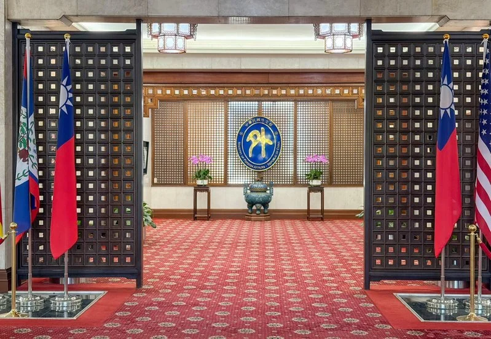

反擊！韓僑居留證我改稱「南韓」 下一步鎖定入台電子簽
2026-03-18 11:35 聯合報 ／ 記者 林新祐／台北即時報導

南韓政府在電子入境卡系統的出發地及下一目的地欄位
稱呼我國為「CHINA（TAIWAN）」，交涉無果。
南韓政府在電子入境卡系統的出發地及下一目的地欄位，稱呼我國為「CHINA（TAIWAN）」，交涉無果。
外交部今天發布新聞稿指出，經跨部會協調，自本月起，依雙邊對等原則，將我國外僑居留證中原列 「韓國」之名稱調整為「南韓」，我方要求
「韓方」在月底前回覆，若沒有獲得正面回應，將會進一步在「台灣電子入國登錄表」相關欄位對韓國的標示採取相應作為。
延伸閱讀